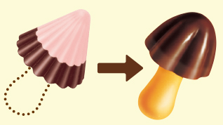
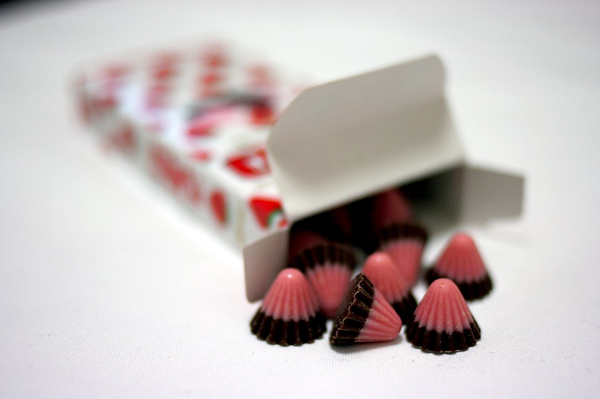

きのこの山の成り立ちは1969年、当時製造されていたアポロの売れ行きが悪く、せっかく作った円錐型のチョコレートの製造ラインを何かに使えないかと担当者が考えていたところ、円錐型チョコを傘に見立て、そこに棒状のクッキーを刺すことできのこに見立てるという、まさに天啓としか言えない着想を得たことが起源とされる。
企画を持ち込んだ当時は、まだその革新的デザインに理解が及ばない者もあった。しかし、5年の開発期間を経て食べやすくするために軸をクラッカーにする、形をかわいらしくする、チョコとクラッカーの組み合わせをより高めるなど、多くの人々に救いが享受されやすいよう作りこまれ、いざ発売の時に「人々の郷愁や自然、優しさを想起させる親しみある名前を」との意味を込め「きのこの山」という神聖五文字が授けられたのである。
その自然界を超越した黄金比とされるデザインと天上のものとしか思えぬチョコとクラッカーの齎す調和は人々の心を魅了し、瞬く新商品の売り上げ記録を塗り替え世間に浸透していった。この時、人々の心に信ずるべききのこが一本は得たのである。
しかし、この4年後にのちに20年に渡る争いを繰り広げることになる宿敵も開発されることとなる。

きのこがイエスとするなら聖母マリアといったところか。

昔のパッケージ。歴史を感じさせる美しさ。